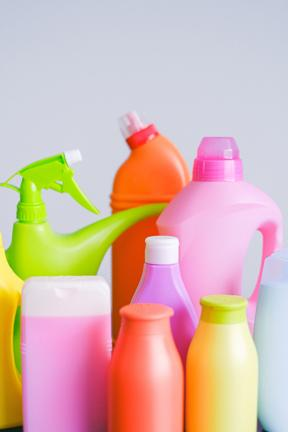
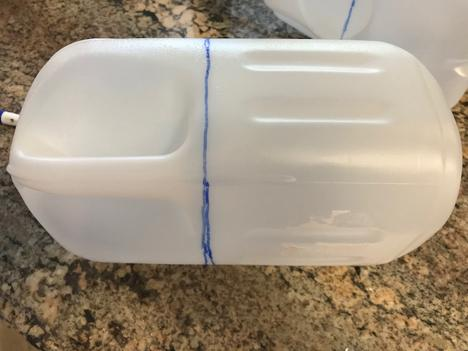
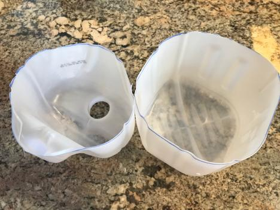
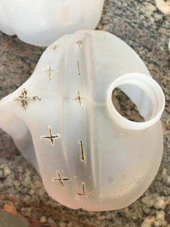
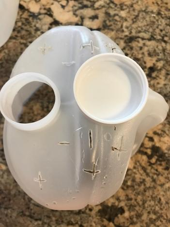
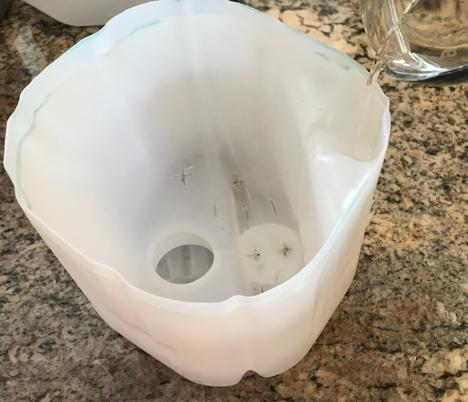
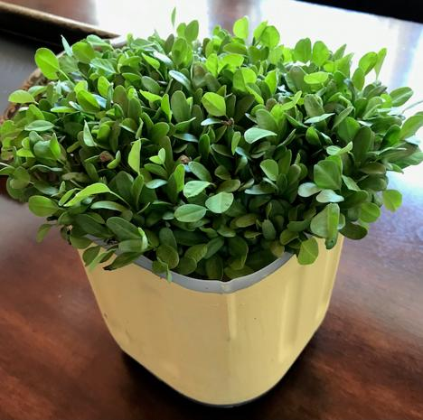
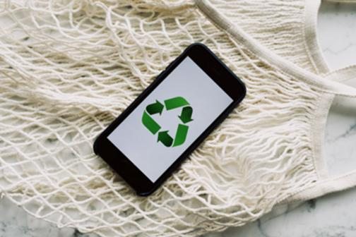
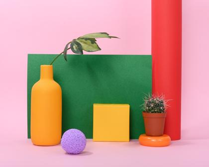

Most people around the world have hobbies. Hobbies are known to be the "Mood Boosters"! They are the best stress-busters, a great way to relax and enjoyable breaks during a monotonous schedule. Just like most people around the world, even I have several hobbies. I love creating unusual art with common household and natural materials, sculpting with biodegradable materials. Being a nature lover, I experiment and propagate new plants with roots and cuttings. Being a vegetarian and health conscious mother, I love cooking, baking and creating all that amuses the taste buds. I make healthy simulated meat dishes with non-meat proteins. I am a trained singer in Indian semi-classical music, so I love singing and listening to melodies from around the globe. My other hobbies are gardening, travelling, reading, photography, learning new skills and the list is unlimited... In fact, I fall short of time in pursuing all of them at once. However, I do pursue some of my hobbies concurrently. For those requiring dedicated time and effort, I take up only 2-3 of my hobby projects at a time to be able to finish them.
In this article, I will share about one of my many hobbies with a purpose - Creating new and useful items with recyclable materials. I challenge myself to come up with new creative ways to renew plastic containers and glass bottles. I often get to hear some criticism when I save some of the plastic cans and bottles for my projects up until the final result comes out! I like to put these plastic containers to a good productive use as and when I can. This allows me to contribute my tiny bit towards saving our environment and nature.
Here, I will demonstrate as to how a new self watering planter can be made with a used regular plastic milk can.

Self Watering Planter
Materials required
Empty plastic milk can. The taller the better!
A pair of Scissors
A knife or a long nail
Small river rocks or pebble rocks
Sharpie marker
Acrylic paints and brush to paint the planter
Instructions :
1. Take the plastic milk can. Mark it with a sharpie just below the handle as shown in the picture to cut.

Marking container to cut
2. Using scissors, cut along the marked lines and separate the top from the bottom half of the container as shown in the picture below.

Separate top and bottom half of container
3. Punch holes in the top half of the can with scissors or by a heating the tip of a knife in flame,as shown in the picture below.

Make holes for drainage
4. Stick the lid to the container with glue gun as shown in picture below.

Lid glued on top to create space at the bottom for drainage
5. Now invert the top half of the can and carefully place it inside of the bottom half aligning to the bottom as shown in picture. Tip : You can put some small pebble rocks inside the bottom half of the can for good drainage and water conservation for self watering the roots of the plants. You can water the plant through the hole as shown in the picture below

Self watering planter
6. Paint and decorate the exterior of the can with your favorite acrylic paint to give it a fresh look. Add potting soil and start plants from seeds or repot seedlings in the planter.

Edible fenugreek plants growing in the planter.
Viola, now you have a new planter ready!
Recycling plastics can make great projects for parents and teachers to create with the children. It makes them aware of their surroundings, educates them on saving the environment and develops their individual creativity. For more ideas on how to create something new with your used recyclable plastic containers and bottles, you can visit Plastic Bottle Crafts.


In today's world, there are many items whether consumable or not, are packaged in plastic containers and glass bottles. As a result, a lot of recyclable plastic and glass ends up in the landfill if not reused or repurposed. According to some studies, it takes a plastic and a glass bottle anywhere from 10 to 100 years to decompose [Credit: Plastics and Environment]. Plastic buried deep in landfills can leach harmful chemicals that spread into the groundwater hence harming our environment and nature. With the recent pandemic, even more of plastics and glass has made it to the landfills. As a responsible human, it becomes our responsibility to try and reduce this waste as much as possible by renewing, reusing and repurposing these materials. To see how these recycled plastics are being used, check out Recycling Plastics.
Design of the planter, demonstration and images on this webpage are original and protected by copyrights law unless otherwise indicated. Planter can be re-created based on the design and instructions on this page for reuse, recycling, repurposing of plastics for non-profitable purposes only. Copying and relabeling of the design of the planter and the contents of this page is prohibited.